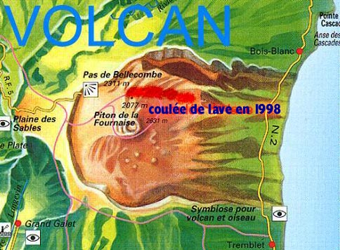

La fournaise se réveille
Chaque premier du mois, je vous propose un nouveau lien vers un site web de la Réunion. Pour ce mois de mars, je suis très heureux d'avoir pris un peu de retard avant la mise à jour. Ainsi j'ai pu vous proposer de visionner, grâce au site de Runnet, les premières photos de l'érruption du piton de la Fournaise du 9 mars 1998 après six ans de silence. Vous pouvez aussi visionnerles premières vidéos grâce au serveur Runisland.
Même si Runnet existe toujours les images de cette erruption ne sont plus là où j'envoyais les lecteurs en 1998.

Merci à Colibri pour la carte
L'occasion est trop belle pour vous rappeler que ce volcan est l'un des plus actifs du monde, comme peut d'ailleurs vous le raconter le site de la maison du volcan (site aujourd'hui disparu), le musée du Piton de la Fournaise et sans doute l'un des musée de vulcanologie les plus réussi au monde, situé sur la route du volcan, sur la Plaine des Caffres.
Pour en voir plus
Rendez-vous au mois prochain pour voir plein de photos de cette éruption.